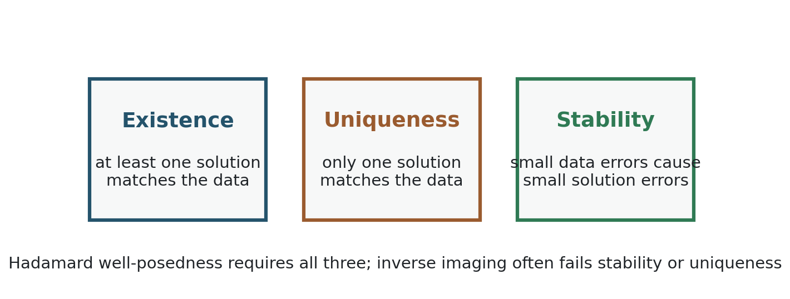
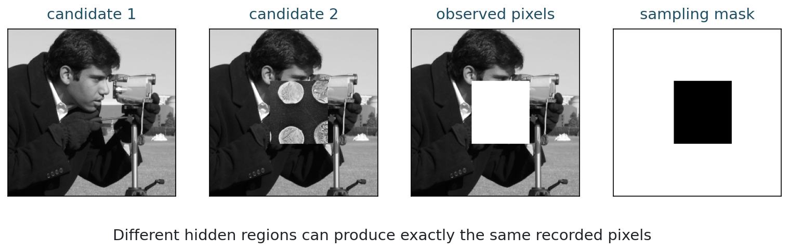
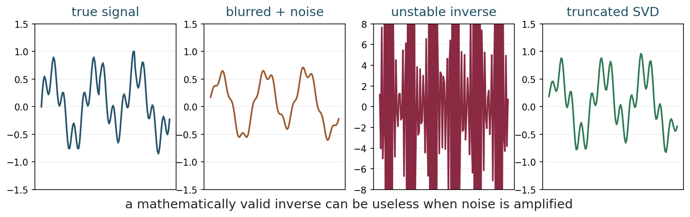
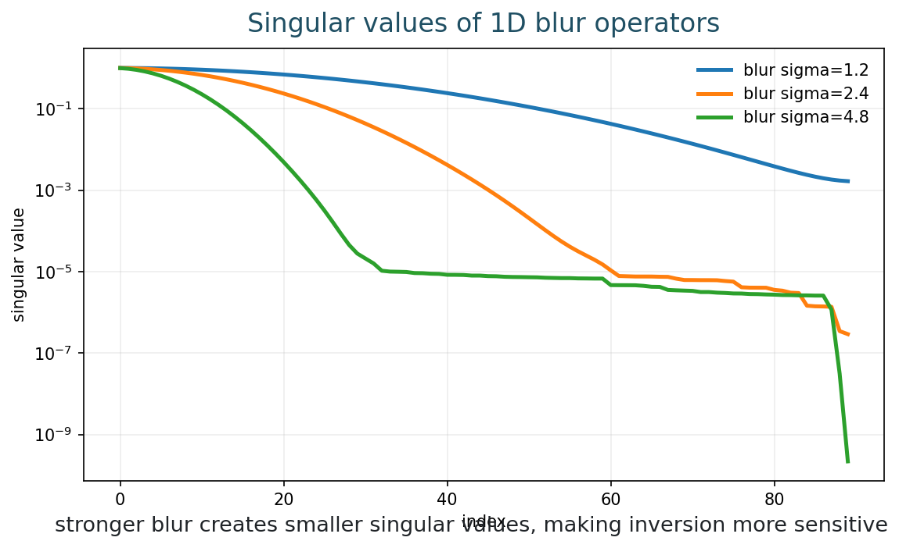
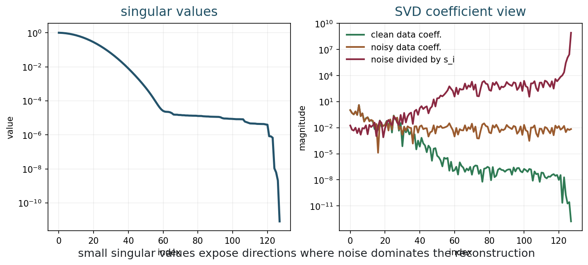

Ill-Posed Inverse Problems
Chapter 5
Slides | Notebook | Open in Colab
Learning Goals
By the end of this chapter, you should be able to:
- state Hadamard’s three conditions for well-posedness;
- identify non-uniqueness in missing-data imaging;
- distinguish missing recorded pixels from physical occlusion;
- explain stability and instability;
- separate data-supported information from prior-selected information;
- interpret small singular values as noise-amplifying directions.
The Inverse Problem
A forward problem maps a cause to an effect:
x \longmapsto y = f(x).
An inverse problem asks us to recover a cause from an observed effect:
y \longmapsto x.
In imaging, x may be an unknown image or scene, and y may be a blurred, noisy, incomplete, or transformed measurement.
When the imaging model is linear, we write
y = Ax.
Linear models include idealized blur, Fourier sampling, and recorded-pixel selection after image formation. But physical scene occlusion is different: hidden content may never reach the sensor, so the inverse problem is not simply “undoing a linear operator.”
This chapter is the conceptual center of the course. If inverse problems were always well posed, imaging would be mostly an exercise in applying the inverse of a known transformation. The interesting part begins when the inverse map is missing, ambiguous, or unstable.
The same idea will later explain why neural networks enter the story. A neural network is not magic information recovery. It is a learned way of choosing among possible reconstructions, stabilizing an unstable inverse, or encoding what images tend to look like in a training set.
Four Kinds Of Information
Before choosing an algorithm, it is useful to ask what kind of information the data contain. Not every reconstruction error has the same cause.
| Situation | What happened physically or mathematically | What a method can do |
|---|---|---|
| well measured | the data strongly constrain the feature | recover it mainly from data |
| noisy but measured | the feature affects the data, but randomly | reduce uncertainty with statistics or repeated data |
| weakly measured | the feature affects the data only slightly | stabilize the estimate and report uncertainty |
| not measured | the feature did not affect the data | choose a plausible completion using assumptions |
This distinction is central for imaging. A hidden object behind an opaque occluder is not the same as a faint object corrupted by noise. In the first case, the missing information did not reach the sensor from that viewpoint. In the second, the information may be present but unreliable.
The language of inverse problems helps prevent a common confusion. Reconstruction does not always mean recovery of measured truth. Sometimes it means estimating, stabilizing, completing, or choosing among possibilities. Those are legitimate tasks, but they should not be described as if all details came directly from the data.
Hadamard Well-Posedness
Hadamard called a problem well posed if three conditions hold:

Existence, uniqueness, and stability are three different ways an inverse problem can fail.
The three questions are:
| Condition | Question |
|---|---|
| Existence | Does at least one solution fit the data? |
| Uniqueness | Is there only one such solution? |
| Stability | Do small data errors cause small solution errors? |
A well-posed problem may still be computationally expensive. An ill-posed problem may be small and fast but mathematically unreliable.
Well-posedness is about the behavior of the map from data to solution.
Each failure calls for a different response. If existence fails, we may need a softer data term because exact agreement with noisy data is unrealistic. If uniqueness fails, we need additional assumptions to choose among many possible images. If stability fails, we need to damp directions where the data are unreliable.
Most real imaging problems contain more than one failure at once. A blurred noisy image may have a solution that fits the data, but many images fit almost equally well, and the formal inverse amplifies noise. Regularization is not an optional decoration; it is the mathematical response to these failures.
Existence
Existence can fail when the data are inconsistent with the model. For example, suppose a model claims that all measured intensities must be nonnegative and below one, but the data contain values outside that range. Or suppose we demand exact agreement with noisy measurements that no model image can produce.
In practice, noise and model error often make exact existence too strict. This is one reason reconstruction methods use data fidelity terms rather than exact constraints.
For example, instead of requiring
Ax=y,
we often minimize
\|Ax-y\|^2.
The first formula says the model must explain the data exactly. The second says that some disagreement is allowed and penalized. Chapter 4 explained how the shape of that penalty can come from a likelihood.
This is also where modeling humility matters. If the forward model is incomplete, an exact solution to the wrong model is not necessarily a good reconstruction of the real scene.
Non-Uniqueness
Non-uniqueness means several different images explain the same observation.

Different images can agree on all observed pixels.
Let M be a recorded-pixel selection mask:
y = Mx.
If two images differ only where M does not observe, then
Mx_1 = Mx_2.
The recorded data alone cannot choose between x_1 and x_2.
Non-uniqueness is not a rare corner case. It appears whenever the measurement discards information: missing pixels, limited-angle tomography, compressed sampling, severe blur, saturation, occlusion, or aggressive compression. The data may still be useful, but they do not determine one unique answer.
This is why an image completion method always contains assumptions. If it fills a missing region with sky, texture, or a face, it is not reading that content directly from the recorded pixels. It is choosing a plausible completion under some model.
Masking Versus Occlusion
It is important to separate two ideas.
| Situation | Mathematical description | Interpretation |
|---|---|---|
| Recorded-pixel masking | a linear projection of an already formed image | pixels are missing from the stored image |
| Physical occlusion | hidden scene content may not be measured at all | the sensor never received that information |
Both create missing information, but they are not the same physical model. If a person is hidden behind a tree in a single image, the hidden content is not encoded in the pixels behind the tree. No inverse algorithm can recover exact information that was never measured.
This distinction is important pedagogically because images are not one-dimensional audio mixtures. In audio, under favorable conditions, several sources can contribute additively to the same microphone signal. Separation can sometimes exploit that mixture structure. In a single photograph, an occluder may block light from the hidden object entirely. The hidden surface did not contribute additively to the measured pixel values.
The mathematical question is therefore not only “can we invert A?” It is also “was the information present in the data at all?”
This is one of the differences between image reconstruction and source separation. If two instruments contribute to one audio recording, the measurement may contain a mixture of both sources. Under the right assumptions, one can sometimes separate the components because both contributed to the observed signal. But if a tree blocks a person in a single photograph, the hidden person’s light did not contribute to the blocked pixels. A method may infer that a person is likely to continue behind the tree, but that continuation is a prior-based completion, not a direct measurement.
This does not make completion useless. Human vision does this constantly, and image algorithms often need to do it. The important distinction is epistemic: the completed region may be plausible, coherent, and useful, while still being less data-supported than visible regions.
Nullspace Language
For a linear operator A, the nullspace is
\mathcal{N}(A)=\{z:Az=0\}.
If z\in \mathcal{N}(A), then
A(x+z)=Ax.
The nullspace contains invisible changes. If A has a nontrivial nullspace, data fidelity cannot identify a unique image:
D(y,Ax)=D(y,A(x+z)).
To choose between possible reconstructions, we need extra information: smoothness, sparsity, edge preservation, training data, physical constraints, or some other modeling assumption.
This is the role of a prior. A prior does not create measured information. It ranks possible explanations. A smoothness prior prefers smooth completions. A sparsity prior prefers images with a concise representation. A learned prior prefers images that resemble the training distribution.
The strength and danger of priors are the same: they make choices. A good prior can stabilize an impossible problem. A bad or mismatched prior can hallucinate structure, erase unusual details, or make a reconstruction look more certain than the data justify.
A Two-Pixel Inverse Problem
A very small example already contains the whole issue. Suppose the unknown is
x= \begin{bmatrix} x_1\\ x_2 \end{bmatrix},
but the sensor records only the sum
y=x_1+x_2.
In matrix form,
y= \begin{bmatrix} 1 & 1 \end{bmatrix} x.
If the observation is y=10, then all of these are exact solutions:
\begin{bmatrix}5\\5\end{bmatrix}, \quad \begin{bmatrix}10\\0\end{bmatrix}, \quad \begin{bmatrix}0\\10\end{bmatrix}, \quad \begin{bmatrix}20\\-10\end{bmatrix}.
The data determine the sum, not the two components separately. The vector
z= \begin{bmatrix} 1\\ -1 \end{bmatrix}
is invisible because
\begin{bmatrix} 1 & 1 \end{bmatrix} z=0.
Adding any multiple of z changes the unknown but not the data:
\begin{bmatrix}5\\5\end{bmatrix} + t \begin{bmatrix}1\\-1\end{bmatrix} \quad \longmapsto \quad 10.
To choose one solution, we must add something that is not in the measurement. If we require nonnegativity, we remove some candidates. If we prefer small norm, we choose (5,5). If we prefer sparsity, we may choose (10,0) or (0,10). The data did not decide among these; the prior did.
This tiny example is the same mathematical phenomenon as missing pixels, limited measurements, and many reconstruction tasks. The dimension is smaller, but the logic is identical.
What The Data Determine
Ill-posedness forces a useful question:
Which parts of the reconstruction are determined by the data, and which parts are selected by the prior?
For a well-observed direction, the data strongly constrain the answer. For a nullspace direction, the data do not constrain the answer at all. For a weak singular direction, the data contain some information, but it is fragile because noise and model error are amplified.
This gives three regimes:
| Direction type | Data support | Reconstruction risk |
|---|---|---|
| strongly observed | high | usually reliable if the model is correct |
| weakly observed | partial | sensitive to noise and regularization |
| invisible/nullspace | none | chosen entirely by assumptions |
This table is a better mental model than asking whether a method “recovers” the image. Different parts of the image may be supported to different degrees. A large smooth structure may be strongly supported while a small edge, texture, or hidden region is mostly prior-selected.
For learned methods, the same question remains. A network may produce a plausible detail in a weakly observed direction, but plausibility does not tell us whether the detail was measured. It tells us that the detail is compatible with what the network has learned.
A Reconstruction Audit
A good habit is to annotate a reconstruction by evidence, not only by appearance. For any visible structure in a reconstructed image, ask:
| Audit question | Why it matters |
|---|---|
| Did this structure affect the measured data? | separates recovery from hallucinated completion |
| Is it in a strongly or weakly observed direction? | estimates sensitivity to noise |
| Would a different prior produce a different structure? | detects prior-selected content |
| Does the residual change if the structure is removed? | tests data support through the forward model |
| Is the feature important for the task? | connects mathematics to risk |
The same audit applies to classical and neural methods. A Tikhonov reconstruction, a total variation reconstruction, and a neural reconstruction may all produce plausible images. The inverse-problem question is more precise: which parts are forced by the data, which parts are stabilized by the prior, and which parts are essentially chosen by the model?
This question will become increasingly important as the course moves toward neural networks. Learned methods can make prior-selected content look extremely convincing. That visual strength is useful, but it increases the need to distinguish measurement evidence from learned plausibility.
Why A Small Residual Is Not Enough
It is tempting to judge a reconstruction by the size of
\|Ax-y\|.
A small residual means the reconstruction explains the measurements under the forward model. That is important, but it is not the same as correctness.
In a non-unique problem, two images can have exactly the same residual. In a noisy problem, an image can fit the noise too closely. In a model-mismatch problem, an image can fit the mathematical model while failing the real physical situation.
This gives a useful separation:
| Question | What it tests |
|---|---|
| Is \|A\hat{x}-y\| small? | data consistency |
| Is the solution stable under small changes in y? | robustness to noise |
| Are invisible or weak directions being chosen reasonably? | prior suitability |
| Does the forward model describe the acquisition? | physical modeling |
A reconstruction should pass more than the first test. The residual asks whether the answer agrees with the data. Ill-posedness asks whether the data were enough to determine that answer.
Stability
An inverse map is stable if nearby data give nearby solutions. Informally,
\|y_1-y_2\| \text{ small} \quad\Rightarrow\quad \|x_1-x_2\| \text{ small}.
Stability is the reason noise matters mathematically.
Consider the one-dimensional model
y=\varepsilon x.
The inverse is
x = y/\varepsilon.
If \varepsilon is small, tiny errors in y become large errors in x.
Imaging Instability
Blur suppresses some directions in image space. Deblurring tries to divide by those suppressions.
The unstable directions are the directions that the forward model almost erases.

A direct inverse can be mathematically defined and still useless in the presence of noise.
In this picture:
- a solution exists;
- the model is known;
- the data error is tiny;
- the direct inverse is still unstable.
This is a stability failure.
Singular Values
The singular value decomposition gives a coordinate system for sensitivity.
For a linear operator A,
A v_i = \sigma_i u_i.
The singular value \sigma_i tells how strongly A transmits the input direction v_i.
Large singular values correspond to directions that are visible in the data. Small singular values correspond to directions that are weakly visible or nearly invisible.
In imaging, these directions are often not individual pixels. They may be patterns: smooth components, oscillatory components, edges in certain orientations, or combinations of many pixels. Thinking in directions is useful because an operator can preserve one kind of pattern while almost erasing another.
Blur, for instance, tends to preserve low-frequency content and suppress fine detail. That does not mean all fine detail is gone equally, but it tells us why deblurring becomes sensitive to noise.
Inverting In SVD Coordinates
If
y=Ax
and
y=\sum_i \alpha_i u_i,
then the formal inverse is
x=\sum_i \frac{\alpha_i}{\sigma_i}v_i.
With noisy data
y^\delta=Ax+\eta,
the inverse includes terms of the form
\frac{\langle \eta,u_i\rangle}{\sigma_i}.
Small singular values divide noise by a small number.

Stronger blur typically makes singular values decay faster.
Reading Singular-Value Plots
Singular values help diagnose instability:
- stronger blur gives faster singular-value decay;
- later singular vectors often represent oscillatory detail;
- small singular values mean details are weakly observed;
- inversion becomes sensitive where singular values are small.

The dangerous coefficients are those where noise is divided by small singular values.
Condition Number
For an invertible matrix,
\kappa(A)=\frac{\sigma_{\max}}{\sigma_{\min}}.
A large condition number means there is a direction that is transmitted much more weakly than another.
The condition number warns us about worst-case sensitivity, but it is not the whole story. In imaging we also care about:
- where the noise lives;
- whether small singular directions contain important image details;
- how the reconstruction will be used.
A single number cannot describe all perceptual or scientific risk. A small artifact in the background of a natural photograph may be acceptable. A small missed structure in a medical image or scientific measurement may be critical. Stability is mathematical, but the acceptable tradeoff is application dependent.
Ill-Posedness And Neural Networks
The link to neural networks is now visible. When the inverse problem is non-unique or unstable, an algorithm must use information beyond the raw measurement. Classical methods encode this information explicitly through a penalty such as smoothness or sparsity. Neural methods learn some of this information from examples.
There are several possible roles:
| Neural role | Inverse-problem interpretation |
|---|---|
| Direct reconstruction network | learn an approximate inverse y\mapsto x |
| Learned denoiser | learn what clean images look like locally |
| Learned regularizer | learn a penalty or score for plausible images |
| Unrolled algorithm | learn parts of an iterative reconstruction method |
| Data-consistent network | combine learned image structure with the known forward model |
This course does not treat neural networks as a replacement for inverse-problem thinking. It treats them as one modern answer to the same old question: when the data do not determine a stable unique image, what additional information should guide reconstruction?
Stabilization Idea
If small \sigma_i amplify noise, one crude stabilization idea is:
\frac{\alpha_i}{\sigma_i} \quad\text{only for sufficiently large } \sigma_i.
This is the idea behind truncated SVD.
Truncated SVD keeps stable directions that are well observed and discards unstable directions that may contain detail. This is already a bias-stability tradeoff.
The next chapter replaces a hard cutoff with Tikhonov regularization:
\min_x \|Ax-y\|_2^2 + \lambda\|x\|_2^2.
This transition is important. Chapter 5 diagnoses the illness: missing uniqueness and missing stability. Chapter 6 introduces a first treatment: modify the problem so that unstable solutions are penalized.
Common Mistakes
A first mistake is to say that an inverse problem is hard only because the matrix is large. Size can make computation difficult, but ill-posedness is different. A tiny matrix with a very small singular value can be unstable.
A second mistake is to believe that if an image looks plausible, it must have been recovered from the data. Plausibility may come from a prior or training set. This can be useful, but it should not be confused with measured evidence.
A third mistake is to collapse all missing information into the word “masking.” Recorded-pixel masking and physical occlusion can both create missing information, but they describe different imaging processes.
A fourth mistake is to treat every pixel in a reconstruction as equally supported by the data. Ill-posedness is directional: some structures are well observed, some are weakly observed, and some are not observed at all.
Computation
The Week 5 notebook lets you vary blur strength, noise level, and the number of singular values kept.
Run:
python3 examples/week05_ill_posed.pyor open the notebook in Colab from the link at the top of this chapter.
When using the notebook, watch for the point where the formal inverse begins to recover noise instead of detail. Then compare this with the truncated reconstruction. The interesting question is not only which image looks best, but which singular directions have become too unreliable to trust.
Exercises
- Give an example of an inverse problem where existence fails.
- Give an example of an inverse problem where uniqueness fails.
- Explain why a missing square in an image creates many possible completions.
- For singular values 1,0.7,0.3,0.02,0.0001, identify the dangerous directions to invert.
- Explain in your own words why direct deblurring can fail even when the blur model is known.
- Explain how a learned prior can help an ill-posed inverse problem, and give one risk of using such a prior.
- Give an example of a reconstruction feature that might be data-supported and one that might be prior-selected.
Takeaways
- Ill-posedness is a structural issue, not merely a computational inconvenience.
- Hadamard’s conditions are existence, uniqueness, and stability.
- Missing information causes non-uniqueness.
- A reconstruction can contain both data-supported and prior-selected structures.
- Small singular values cause instability because inverse formulas divide by them.
- Regularization is motivated by the need for stable reconstruction.
- Neural reconstruction methods can be understood as learned ways to choose or stabilize solutions.